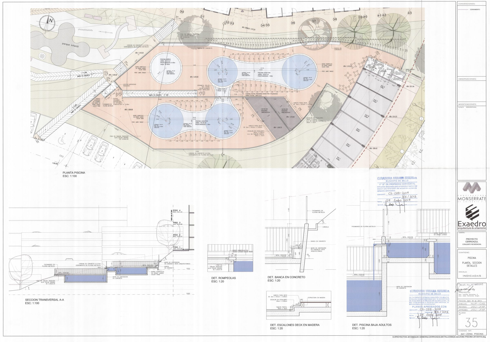
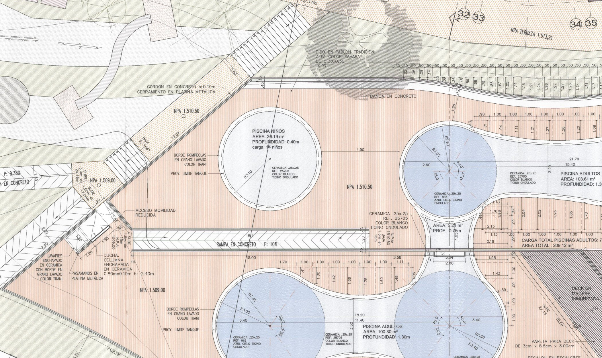

Medidas reales del plano, los cálculos que se derivan de ellas y una calculadora para revisar los datos del día con el piscinero: le das lo que midió y te dice si está dentro de lo que técnicamente debe tener esta piscina.
| Concepto | Adultos (2) | Hidromasaje | Niños | Total |
|---|---|---|---|---|
| Área de espejo | 203,91 m² | 5,20 m² | 30,19 m² | 239,30 m² |
| Profundidad | 1,30 m | 0,75 m | 0,40 m | — |
| Volumen | 265,08 m³ | 3,90 m³ | 12,08 m³ | 281,06 m³ |
| Carga máxima | 78 personas | — | 14 niños | 92 |
El plano rotula «AREA TOTAL: 209,12 m²» para el conjunto de adultos más hidromasaje (103,61 + 100,30 + 5,20 = 209,11 m²). La piscina de niños se reporta aparte, con 30,19 m² y carga de 14 niños.
NPA (nivel de piso) 1.510,50 · 1.509,00 · 1.511,04 · 1.510,53 · 1.509,43 · 1.516,52 · 1.514,06 · 1.513,91 · 1.518,98.
Corresponden a los distintos andenes y al cuarto de máquinas; sirven para verificar pendientes de drenaje y el sentido de escurrimiento hacia canaletas.
Cerámica 25×25 cm, ref. 25705 blanca y ref. 915 azul cielo (Ticino ondulado); bordes con rompeolas en grano lavado color traní; deck en tabla de 3 × 8,5 × 300 cm.
El plano incluye acceso para movilidad reducida, escalones en escalera y peldaños de 30 × 30 cm en el acceso al estanque.
El curso y el Decreto 780 de 2016 parten de que todo el volumen debe pasar por el filtro en un periodo determinado: 6 a 8 horas para instalaciones abiertas al público. Con el volumen real de cada estanque, el caudal mínimo del equipo sale de dividir volumen entre tiempo.
| Estanque | Volumen | Q a 8 h | Q a 6 h | Filtro a 20 m³/h·m² | Filtro a 25 m³/h·m² |
|---|---|---|---|---|---|
| Adultos · doble lóbulo | 134,69 m³ | 16,84 m³/h | 22,45 m³/h | 1,12 m² | 0,90 m² |
| Adultos · R3.50 | 130,39 m³ | 16,30 m³/h | 21,73 m³/h | 1,09 m² | 0,87 m² |
| Hidromasaje | 3,90 m³ | 0,49 m³/h | 0,65 m³/h | 0,03 m² | 0,03 m² |
| Niños | 12,08 m³ | 1,51 m³/h | 2,01 m³/h | 0,10 m² | 0,08 m² |
| Total del sistema | 281,06 m³ | 35,13 m³/h | 46,84 m³/h | 1,87 m² | 1,41 m² |
Para la auditoría práctica: si el caudalímetro del cuarto de máquinas marca entre 35 y 47 m³/h con los cuatro estanques en servicio, la recirculación está en norma. Por debajo de 35 m³/h el agua no completa el ciclo en 8 horas; por encima de 47 trabaja con margen (revisar velocidad de filtración y consumo).
Con 47 m³/h y 15 m de altura manométrica (η 0,65): 2,96 kW ≈ 4 HP.
2 % a 5 % del volumen al día (evaporación, arrastre y lavado de filtros).
Hipoclorito de calcio 65 %. Con hipoclorito de sodio 13 %: 2,16 kg (≈1,8 L).
Calcio 65 %, partiendo de 2 ppm (Δ 7 ppm en 281 m³).
| Cálculo | Fórmula | Ejemplo con estos datos |
|---|---|---|
| Volumen de un estanque | V = área × profundidad | 103,61 × 1,30 = 134,69 m³ |
| Caudal de recirculación | Q = V ÷ t | 281,06 ÷ 8 = 35,13 m³/h |
| Periodo real (auditoría) | t = V ÷ Q medido | 281,06 ÷ 40 = 7,03 h ✔ |
| Área de filtración | A = Q ÷ v (20–25 m³/h·m²) | 46,84 ÷ 25 = 1,87 m² |
| Cloro activo para subir X ppm | g = V × Δppm | 281 × 1 = 281 g de cloro activo |
| Producto comercial | g producto = activo ÷ % | 281 ÷ 0,65 = 432 g de calcio 65 % |
| Bicarbonato para subir alcalinidad | g = V × 1,68 × Δppm | 281 × 1,68 × 10 = 4,72 kg |
| Índice de Langelier | LSI = pH − pHs (AWWA) | −0,3 a +0,3 = agua equilibrada |
Estimaciones de dosificación: sirven para ordenar la auditoría, no reemplazan la ficha del fabricante ni la medición posterior. Toda corrección se hace con el estanque en recirculación y se vuelve a medir a las 2 horas.
Escribe los valores del día y el resultado se actualiza solo.
| Parámetro | Medido | Debe estar | Estado | Acción |
|---|---|---|---|---|
| Sin datos. | ||||
Escribe el cloro y el pH para calcular.
Referencias: hipoclorito de calcio 65 %, hipoclorito de sodio 13 % (densidad 1,2 kg/L), ácido muriático 31 %, bicarbonato de sodio. Aplicar con recirculación activa, nunca mezclar productos entre sí y volver a medir a las 2 horas.

